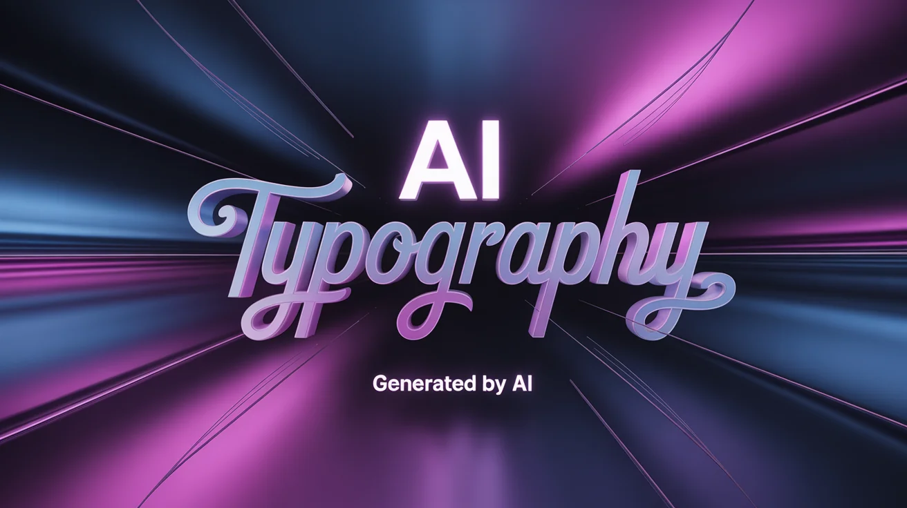

How AI Creates Media
8 Topics · Tagama
Foundations
AI Model Training and Data Sources
An overview of how AI models learn and what role training data
plays in shaping the content they produce.
Image Generation
How AI Generates Images
A look at the processes and technologies behind AI-generated
images.
Video Generation
How AI Generates Videos
An introduction to how AI systems are used to produce video
content.
Audio Generation
How AI Generates Audio (Voice Cloning, Music)
An overview of how AI is used to generate voices, speech, and
music.

Text Generation
How AI Generates Text
A general introduction to how AI language models produce written
content.
Deepfakes
Deepfake Technology Explained
An accessible explanation of what deepfakes are and how they are
made.

Under the Hood
Role of Machine Learning in Media Creation
A look at how machine learning concepts underpin AI-generated
media.
Limitations
Limitations of AI Media Generation
An overview of the current shortcomings and constraints of
AI-generated media.
What is AI-Generated Media?
9 Topics · Moyo

What It Means
Definition of AI-Generated Media
A foundational introduction to what AI-generated media is and
why it matters.

Types
Types of AI Media (Images, Video, Audio, Text, Chatbots)
An overview of the major categories of AI-generated content and
what sets each apart.

Comparison
Difference Between AI Content and Real Content
A general look at what distinguishes AI-generated media from
human-created content.

Everyday AI
How AI is Used in Everyday Applications (Chatbots, Filters,
Recommendations)
An introduction to how AI-generated media shows up in the tools
and apps people use every day.

Pros
Advantages of AI-Generated Media
A general look at some of the benefits associated with
AI-generated media.

Cons
Disadvantages of AI-Generated Media
A general look at some of the concerns and downsides associated
with AI-generated media.

Trends
Why AI Media is Becoming Popular
An exploration of the factors contributing to the growing
presence of AI-generated media.

Deep Dive
Human vs AI Content Comparison
A comparison of human-created and AI-generated content across
various dimensions.

Real-World Examples
Examples of AI Media in Daily Life
A look at where AI-generated media commonly appears in everyday
situations.
AI-Generating Tools
7 Topics · Carbonell

Tool Roundup
Popular AI Tools in 2026
An overview of some of the most widely used AI-generating tools
available today.

Image Tools
Image Generator Tools
An introduction to tools used for generating AI images.

Video Tools
Video Generator Tools
An introduction to tools used for generating AI video content.

Audio Tools
Audio Generator Tools
An introduction to tools used for generating AI audio and voice
content.

Text Tools
Text Generator Tools
An introduction to tools used for generating AI-written text and
content.

Free Tools
Free AI Tools
A look at freely available AI tools relevant to media creation
and verification.

Detection Tools
AI Detection Tools Overview
An overview of tools designed to help identify AI-generated
content.
Detecting AI-Generated Content
10 Topics · Bascos

Verification Guide
Step-by-Step Guide to Verifying Digital Media
A practical guide to checking the authenticity of digital media
before sharing or acting on it.

Visual Clues
Common Signs of AI-Generated Images, Audio, and Video
An introduction to some general indicators that media may be
AI-generated.

Image Verification
Signs a Viral Image Might Be Fake
A general look at warning signs that a widely shared image may
not be authentic.

Video Verification
Signs a Viral Video Might Be Fake
A general look at warning signs that a widely shared video may
not be authentic.

Digital Forensics
Metadata Analysis for Media Verification
An overview of how metadata embedded in media files can be used
in verification.

Search Techniques
Reverse Image Search Techniques
An introduction to using reverse image search as a media
verification tool.

Tool Limitations
Limitations of AI Detection Tools
A look at why AI detection tools are not always reliable and
what their limitations mean in practice.

Provenance
Watermarking in AI Media (Visible and Invisible)
An overview of how watermarking is being used to label and track
AI-generated content.

Cross-Verification
Comparing Multiple Sources for Verification
A general look at why consulting multiple sources is important
when verifying media.

Professional Methods
Fact-checking Methods Used by Organizations (Snopes, PolitiFact)
An overview of how professional fact-checking organizations
approach verifying digital content.
AI Risks, Scams, and Misinformation
9 Topics · Bobiles

Misinformation
Dangers of AI-Generated Misinformation
An overview of the risks and real-world harms associated with
AI-generated false content.

Key Concepts
Misinformation vs Disinformation
A general explanation of the difference between misinformation
and disinformation, and why it matters.

Scams
AI Voice Cloning Scams
An overview of how AI voice cloning technology is being used in
scams and fraud.

Identity Theft
Identity Theft Using AI Media
A general look at how AI-generated media can be used in
identity-related fraud.

Social Media Scams
AI Scam Cases on Social Media
An overview of how AI-powered scams have appeared and spread
across social media platforms.

Crisis Misinformation
How Fake Content Spreads During Crises
A look at why false and AI-generated content tends to spread
quickly during emergencies and crises.

Psychology
Why People Fall for Fake Content
A general exploration of the psychological and behavioral
reasons people are susceptible to fake content.

Mental Impact
Psychological Impact of AI Media on Users
An overview of how widespread AI-generated media may affect
people's mental and emotional well-being.

Trust & Reality
Can We Still Trust What We See Online?
A discussion of how AI-generated media is affecting trust in
digital content.
Ethical and Legal Issues of AI Media
7 Topics · Sabas

Ethics
Ethical Issues in AI Content Creation
An overview of some of the key ethical concerns raised by
AI-generated content.

Accountability
Accountability in AI Media (Who Is Responsible?)
A general discussion of how responsibility is considered when
AI-generated content causes harm.

Law
Legal Use of AI Media
An introduction to some of the legal considerations surrounding
the use of AI-generated media.

Bias
Bias in AI-Generated Media
An overview of how bias can appear in AI-generated media and why
it matters.

Copyright
Copyright and Ownership Issues
A general introduction to the copyright and ownership questions
raised by AI-generated content.

Responsible Use
Responsible Use of AI Tools
A general guide to using AI-generating tools in a thoughtful and
ethical manner.

For Students
How Students Can Avoid Using AI Unethically
A guide for students on using AI tools responsibly in academic
settings.
AI in Society and Real Life
8 Topics · Maghirang
Social Media
AI in Social Media
An overview of the role AI-generated media plays across social
media platforms.
Journalism
AI in Journalism and News
A look at how AI-generated content is intersecting with
journalism and the news industry.
Education
AI in Education (Helpful or Harmful?)
A general discussion of how AI tools are being used in
educational settings and the questions they raise.
Influencers
Role of Influencers and AI Personas
An overview of how AI-generated personas and synthetic
influencers are appearing online.
For Students
AI in School Projects
A look at how students are incorporating AI tools into their
schoolwork.
Education Benefits
Benefits of AI in Education
An overview of some ways AI tools can support and enhance
learning.
Content Creators
AI Impact on Content Creators
A look at how the rise of AI-generated media is affecting people
who create content professionally.
Workplace
AI for Office Workers (Email / Media Verification)
An overview of how AI-generated content is showing up in
workplace environments and what it means for office workers.
Digital Literacy and Prevention
9 Topics · Palmero

Foundations
Why Digital Literacy Matters
An introduction to why digital literacy is an important skill in
an age of AI-generated media.

Safety Tips
Basic Tips to Stay Safe from Fake Content Online
A general introduction to habits and practices that can help
protect you from fake content online.

Responsible Sharing
Responsible Sharing Online
A guide to being more thoughtful and careful about what you
share online.

Source Verification
How to Verify Online Sources
A general introduction to assessing the credibility of online
sources.

For Families
How to Talk to Family About Fake Content
Some general guidance on discussing fake and AI-generated
content with family members.

For Students
How Students Can Avoid Fake Information
A student-focused guide to recognizing and avoiding fake
information.

For Teachers
How Teachers Can Promote AI Literacy
An overview of ways teachers can help students develop AI and
media literacy skills.

For Parents
How Parents Can Identify Fake Content
A parent-friendly introduction to spotting and understanding
AI-generated media.

Quick Checklist
Guide Before Sharing Posts Online
A simple checklist to consider before sharing content online.
Case Studies of AI Media Incidents
6 Topics · Bobiles, Carbonell, Tagama

Deepfake Cases
Famous Deepfake Cases
A look at some notable real-world incidents involving deepfake
technology.

Scam Cases
AI Scam Case Studies
A look at documented cases where AI-generated media was used in
scams and fraud.

Social Media
Fake Social Media Post Examples
Examples of fake and AI-generated posts that have circulated on
social media.

Misinformation Incidents
Real-Life AI Misinformation Incidents
A look at documented incidents where AI-generated content
contributed to the spread of false information.

Politics
Case Studies of AI in Politics
A look at instances where AI-generated media has been used in
political contexts.

Advertising
Case Studies of AI in Advertising
A look at how AI-generated media has been used in advertising
and marketing.
Future of AI Media
7 Topics · Maghirang, Sabas, Palmero, Moyo

Technology Outlook
Future of AI Media Technology
A look at where AI media generation technology may be headed in
the coming years.

Opportunities
AI Opportunities
An overview of potential opportunities that AI media technology
may create going forward.

Careers
Future Jobs Related to AI
A general look at how AI may shape careers and job opportunities
in the future.
Future Risks
Risks of AI in the Future
A forward-looking discussion of potential risks associated with
AI-generated media.
Policy Law
AI Regulation Trends
An overview of how governments and institutions are approaching
the regulation of AI media.

Society
AI and Society in the Future
A general exploration of how society may change as AI-generated
media becomes more prevalent.

Society
Ethical AI Development in the Future
A look at ongoing discussions around building and using AI
technology in more ethical ways.